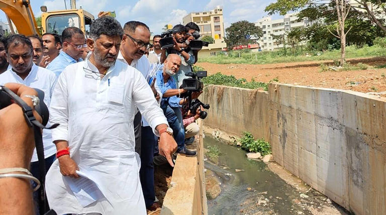
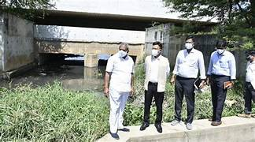

INDIA TODAY
India's Bengaluru may need $339 million
to fix drainage, avoid flooding, report says;
By Deep Kaushik Vakil

BENGALURU, May 31 (Reuters) - India's Bengaluru may need nearly 28 billion rupees ($339 million) to restore
drainage network damaged by rapid real estate development as repeated floods
threaten to disrupt work and life in IT hub,.Dubbed India's Silicon Valley for
hosting more than 3,500 IT companies and startups, the city has seen an influx
of millions of workers and a boom in real estate construction over the past two
But that has come at a cost as unfettered construction around lakes and over
stormwater drains has limited the city's capacity to absorb and drain off water,
resulting in unprecedented floods last year that disrupted the IT industry. And that can affect investments in the real estate market.
"From the buyers' point of view, there is definitely a red flag when they see that there has been a past flooding issue, it's a part of their buying due diligence.
The report by global property consultancy Knight Frank said the city's share of built-up area ballooned to 93% in 2020 from 37% in 2002, putting "severe stress" on the natural drainage system that channelled water into the city's interconnected lakes.
The report projected a jump in population to 18 million by 2031 from an estimated 12.3 mln in 2022. The area within city limits more than tripled in 2011 to 741 square kilometres from 1995 levels.
"Due to climate change, there has also been short duration, high intensity precipitation, further accentuating risks of flooding in the city amidst limited infrastructure to contain the same," the report said.
"This flood issue is happening every year. Forget about every year, every time it rains," said Shantanu Mazumder, executive director for Bengaluru at Knight Frank India.
DKS visits Bengaluru’s flood-prone areas, asks officials to take necessary measures ahead of monsoon;

Shivakumar, who also holds the Bengaluru City Development portfolio, inspected the ongoing widening of storm water drain (SWD) at Yemlur. The drainage work has been delayed due to the laying of Gas Authority of India Limited (GAIL) pipeline. The minister directed the officials to construct a ‘kaccha’ drain as a temporary measure so that water during monsoon can flow smoothly without leading to flooding of the nearby areas. Yemlur was flooded due to heavy rains in September 2022.
